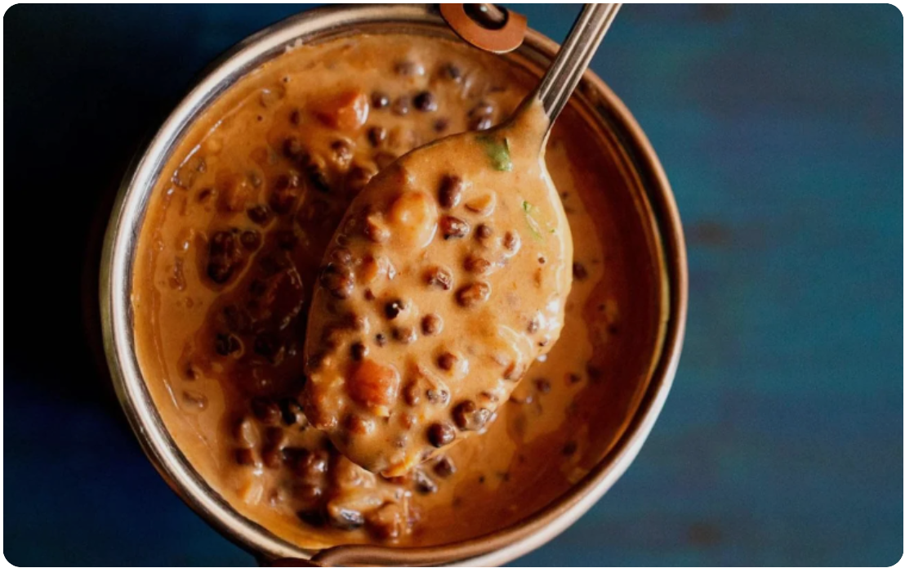
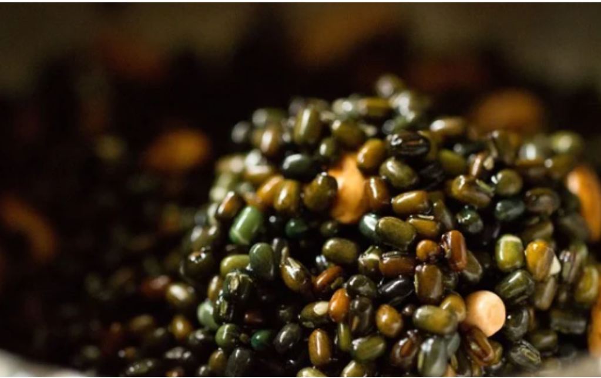
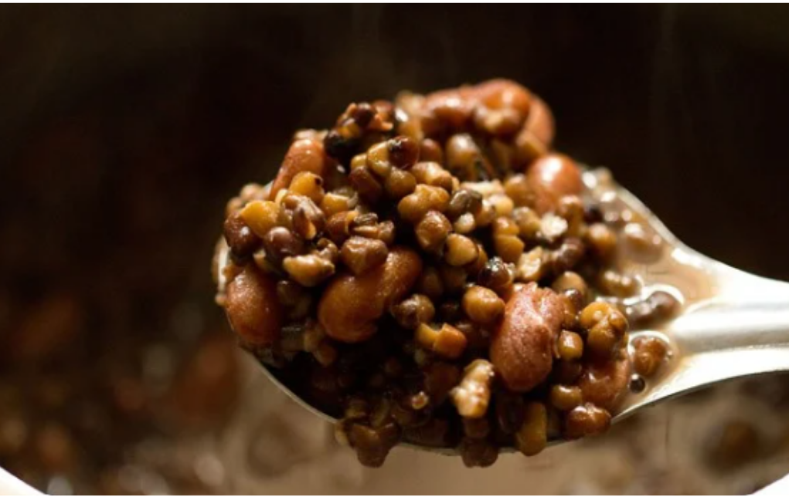
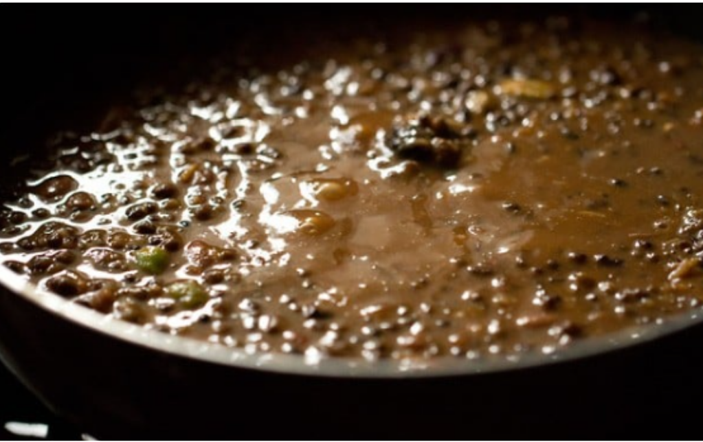

TIME: 45 minutes
SERVINGS: 5
SPECIAL EQUIPMENT: cooking pan
Ingredients
- ½ cup whole urad dal
- 3 ½ cups water
- 6 cloves garlic
- ½ tsp turmeric
- 1 tsp masala powder
- 1 cup onions
- ½ tsp cumin seed
- 1 jalapeno
- 1 tomato
- 3 tbsp cilantro
- 1 tsp salt
Instructions
- Combine the lentils, water, whole garlic cloves, and turmeric.
- Bring to a simmer, reduce heat, and cover.
- Cook until the lentils have disintegrated, stirring occasionally to prevent sticking.
- Remove from heat and set aside.
- Heat a small skillet over medium-low heat and add the oil.
- When the oil starts to shimmer, add the onions and sweat them until soft and translucent.
- Toss in the diced jalapeno and cook for another minute.
- Add the cumin seeds.
- Toss in the tomato and cilantro and cook until the tomato is just warmed through.
- Fold the mixture into the dal and add the salt.
- Ready to serve as a main dish with an Indian flatbread.